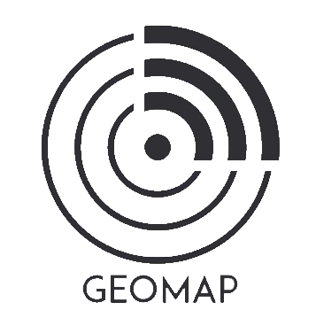

GeoMap
Market
Industry analysis
-
Geomap is an app that collects and compiles the necessary data needed
to accurately produce a 3D map of below the earth’s surface.
Therefore the market that would be best suited to our app is the digital map market.
This market has been growing rapidly in both the private and public sector over
the years due to an increase in the demand for geospatial, environmental and
topographical information in various different sectors such as urban planning,
infrastructure management and resource management. Advancements in digital mapping technology
such as Geographic Information System (GIS) have also greatly aided in the growth of this market as
the use of GIS has allowed more user-accessibility and real-time map execution. According to a study
by Grand View Research, the global digital map market size is growing constantly and is currently estimated to
reach $16.15 billion by 2027, registering a Compound Annual Growth Rate of 13% from 2020 to 2027.
Target market analysis
-
Our target market for Geomap is individuals, construction workers and construction companies who dig or
excavate into the earth’s surface in order to create building foundations, reservoirs and roads.
There is currently no app in the digital map market that provides users with real- time information
about the location of pipes and cables below the earth’s surface, resulting in us being the sole provider of this service.
Geomap provides users with a quicker, more efficient way to visualize any pipes or cables below the surface to prevent damage
to any utility assets below the ground is through the use of maps or with ground-penetrating radars.
Finances
Competitive analysis
-
As we are the sole provider of 3D mappings below the earth’s surface we currently do
not have any direct competition with other companies in the digital map market.
However, as the digital map market is dominated by innovative companies such as ESRI Information
Solutions Inc., Google LLC and HERE technologies we would expect them to eventually develop
software that would rival ours.
All competitors in the digital map market are financially strong with the highest earner,
Google LLC estimated to gross a total of 11 billion dollars by the year 2023. As we understand
that we will be in competition with financially stable, innovative companies who may eventually develop
software to rival our unique service we will ensure that we remain competitive and continue to develop
and grow our business year after year.
Products such as cable locators are also an example of indirect competitors to our app.
A cable locator is an instrument that can be used to locate buried utilities below the earth’s surface
with 97% accuracy. While cable locators have relatively the same concept as our app, they are less
efficient due to the size of the instrument and more expensive to use, with prices ranging
from 700 - 2,000 euro. Therefore, we would be confident that our product would excel in competition
against other indirect competitors such as cable locators.
Pricing
-
The pricing of our app, Geomap will be subscription based. We will charge users €5.00 a month for
Starter package to €3.99 a month for the Premium package. There will also be plans available for large
companies who wish to pay in bulk for a specified amount of users. As the pricing is subscription based we
will also offer discounts to customers who decide to pay in advance for longer subscription periods
such as twelve months as opposed to one. We decided to follow a subscription-based model for our pricing as
ultimately it results in a more reliable income source for our company. As we will have a clear understanding
of our revenue flow every month we will be able to concentrate on innovating and upgrading the mappings and layout
of our app without having to worry about our business collapsing. Another reason why we chose a
subscription-based pricing model is that it will ensure our users remain engaged with our app as
they will want to see if they are getting the best out of the service they are paying for.